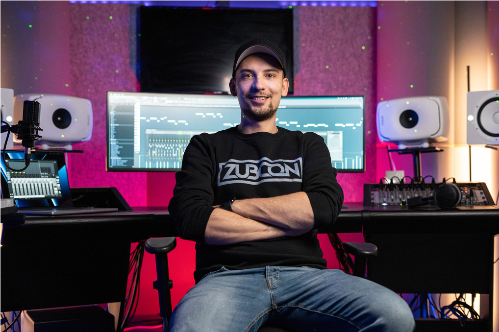

Hallo, ich bin Edwin Hoffmann – Musiker aus Leidenschaft und Gründer der Katakomben Studios. Ich wurde 1993 geboren und habe deutsch - russische Wurzeln. Ich trage die Liebe zur Musik schon mein ganzes Leben in mir. Musik begleitet mich seit meiner Kindheit und ist für mich weit mehr als ein Beruf – sie ist meine größte Leidenschaft und mein Weg, mich auszudrücken.